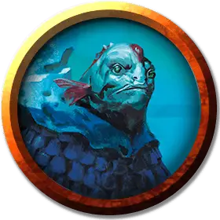

Сахуагин глубоководный ныряльщик
Sahuagin Deep Diver
Средний Гуманоид (Сахуагин), законно-злой

Класс Доспеха 15 (природный доспех)
Хиты 91 (14к8 + 28)
Скорость 30 футов, плавая 40 футов
| мод | спас | ||
|---|---|---|---|
| СИЛ | 14 | +2 | +2 |
| ЛОВ | 16 | +3 | +3 |
| ТЕЛ | 15 | +2 | +4 |
| мод | спас | ||
|---|---|---|---|
| ИНТ | 12 | +1 | +1 |
| МДР | 13 | +1 | +3 |
| ХАР | 9 | −1 | −1 |
Навыки Восприятие +5, Скрытность +3
Чувства тёмное зрение 120 футов, пассивное Восприятие 15
Языки Сахуагинский
Опасность 4 (1100 опыта)
Бонус мастерства +2
Особенности
Кровавое бешенство. Сахуагин совершает с преимуществом броски рукопашных атак по существам, у которых хиты ниже максимума.
Ограниченная амфибийность. Сахуагин может дышать и воздухом и под водой, но чтобы не задохнуться, ему нужно погружаться в воду хотя бы раз каждые 4 часа.
Акулья телепатия. Сахуагин может магическим образом командовать всеми акулами, находящимися в пределах 120 футов от него, при помощи ограниченной телепатии.
Скрытый солью. Глубоководный ныряльщик совершает с преимуществом проверки Ловкости (Скрытность), совершаемые при погружении в воду.
Приманка. Глубоководный ныряльщик может заставить свою приманку загораться или потухнуть по своему желанию. Пока приманка светиться, глубоководный ныряльщик излучает яркий свет в радиусе 30 футов с центром на себе и тусклый свет еще на 20 футов.
Действия
Мультиатака. Сахуагин совершает две атаки Алебардой или одну атаку Укусом и две атаки Когтями.
Алебарда. Рукопашная атака оружием: +4 к попаданию, досягаемость 5 футов, одна цель. Попадание: 13 (2к10 + 2) рубящего урона.
Укус. Рукопашная атака оружием: +4 к попаданию, досягаемость 5 футов, одна цель. Попадание: 7 (1к10 + 2) колющего урона.
Когти. Рукопашная атака оружием: +4 к попаданию, досягаемость 5 футов, одна цель. Попадание: 6 (1к8 + 2) рубящего урона.
Свет Секолы. Глубоководный ныряльщик излучает магический свет от своей приманки. Любое существо в пределах 30 футов от глубоководного ныряльщика, которое может видеть свет, должно преуспеть в спасброске Мудрости Сл 11, иначе станет очарованным до конца своего следующего хода. Существо, очарованное таким образом, становится недееспособным, пока оно смотрит на свет.
Описание
Эти могучие сахуагины, описание в "Финальном противнике", изменённые божественной магией Секолы для того чтобы они могли лучше исследовать самые темные глубины океана. Выйдя из воды, они цепляются за тени и служат охотниками и убийцами. Длинная чешуйчатая приманка, которая может светиться, растёт из лба глубоководного ныряльщика.